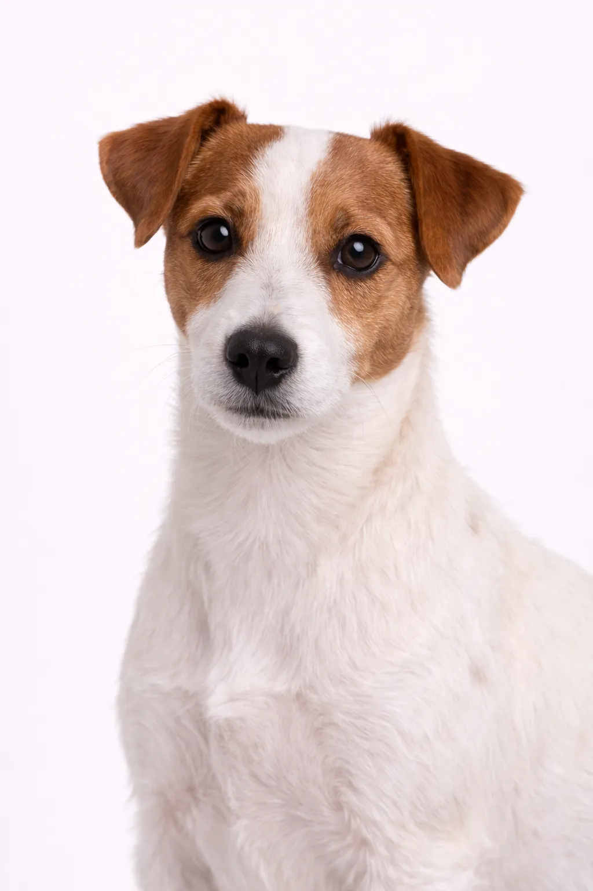

Russell Terrier
Alert, inquisitive ve aile odaklı, Russell Terrier er en ideell husstands dost.
10-12 in
10-15 lbs
Irk Değerlendirmeleri
Mizaç
Genel Bakış
Jack Russell ve Parson Russell'a benzer ama onlardan farklı olan Russell Terrier, biraz daha küçük ve kare vücutludur. Canlı ve atletik köpeklerdir.
Mizaç
Russell Terrier, uyanık, meraklı ve canlı yapısıyla tanınır. Çocuklarla mükemmel bir uyum sağlar ve harika bir aile köpeği olur. Zekâsı ve memnun etme isteği eğitimi keyifli kılar. Erken sosyalleşme, onların dengeli ve uyumlu bir evcil hayvan olarak gelişmesine yardımcı olur.
Sağlık
12-14 yıl yaşam süresiyle genel olarak sağlıklı bir ırktır. Patellar lüksasyon ve diş sorunları yaygın endişeler arasındadır. Düzenli veteriner kontrolleri ve önleyici bakım önemlidir. Sağlıklı bir kilo korumak birçok sağlık sorununu önlemeye yardımcı olur.
Egzersiz
Günlük en az bir saatlik yoğun egzersiz gerektiren yüksek enerjili bir ırktır. Açık hava aktivitelerinden zevk alan aktif ailelerle birlikte yaşamaktan mutluluk duyar. Eğitim ve bulmaca oyunları aracılığıyla zihinsel uyarım da en az egzersiz kadar önemlidir. Yeterli egzersiz yapılmadığında davranış sorunları gelişebilir.
Irk Değerlendirmeleri
Mizaç
Genel Bakış
Jack Russell ve Parson Russell'a benzer ama onlardan farklı olan Russell Terrier, biraz daha küçük ve kare vücutludur. Canlı ve atletik köpeklerdir.
Mizaç
Russell Terrier, uyanık, meraklı ve canlı yapısıyla tanınır. Çocuklarla mükemmel bir uyum sağlar ve harika bir aile köpeği olur. Zekâsı ve memnun etme isteği eğitimi keyifli kılar. Erken sosyalleşme, onların dengeli ve uyumlu bir evcil hayvan olarak gelişmesine yardımcı olur.
Sağlık
12-14 yıl yaşam süresiyle genel olarak sağlıklı bir ırktır. Patellar lüksasyon ve diş sorunları yaygın endişeler arasındadır. Düzenli veteriner kontrolleri ve önleyici bakım önemlidir. Sağlıklı bir kilo korumak birçok sağlık sorununu önlemeye yardımcı olur.
Egzersiz
Günlük en az bir saatlik yoğun egzersiz gerektiren yüksek enerjili bir ırktır. Açık hava aktivitelerinden zevk alan aktif ailelerle birlikte yaşamaktan mutluluk duyar. Eğitim ve bulmaca oyunları aracılığıyla zihinsel uyarım da en az egzersiz kadar önemlidir. Yeterli egzersiz yapılmadığında davranış sorunları gelişebilir.
⦿ Bu Irk Size Uygun mu?
✓ En Uygun
- Aktif aileler
- Deneyimli terrier sahipleri
- Küçük evcil hayvanların olmadığı evler
✗ İdeal Değil
- Hareketsiz haneler
- Ana Sayfas with small pets
Değerlendirmemiz: Jack Russell ve Parson Russell'a benzer ama onlardan farklı olan Russell Terrier, biraz daha küçük ve kare vücutludur. Canlı ve atletik köpeklerdir.